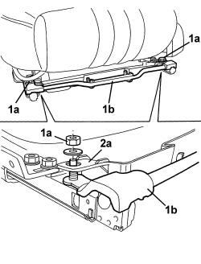

7045J11 REAR SEAT GUIDES CONNECTION BAR, (ONE) LH OR RH - R R
- Path
- Procedures > 70 FITTINGS > 7045 FRONT SEATS > 7045J FRONT SEAT ELECTRIC MOVEMENTS > 7045J11 REAR SEAT GUIDES CONNECTION BAR, (ONE) LH OR RH - R R
- Kind
- repair procedure (removal / refitting; the operation number is the code)
- Applies to
- all engines; all production periods; only with equipment: Electric seats
- Interactive page
- https://sloeber94.github.io/elrnDB/alfa/159/en/#/939005561
Applies to: all engines; all production periods; only with equipment: Electric seats
 Removing
Removing
 Refitting
RefittingOp. 7045A10 FRONT SEAT (ONE), LEFT OR RIGHT - R.R.
Op. 7045A42 GUARD (ONE) FOR FRONT SEAT, LEFT OR RIGHT - R.R.
Op. 7045J26 FRONT SEAT SLIDE MOTOR, L/H OR R/H - R+R FOLLOWING ELECTRICAL WIRING CHECK
1. Unscrew bolts (1a) securing guide connection bar (1b).
2. Raise edges (2a) of the lower seat protection, then remove guide connection bar (1b).

Applies to: all engines; all production periods; only with equipment: Electric seats
Refitting
Removing- Check that the guide connection bar is not damaged.
- Raise edges of the lower seat protection, then fit guide connection bar in its seat.
- Position the edges of the lower seat protection in their seat, then tighten the guide connection bar nuts.
Op. 7045J26 FRONT SEAT SLIDE MOTOR, L/H OR R/H - R+R FOLLOWING ELECTRICAL WIRING CHECK
Op. 7045A42 GUARD (ONE) FOR FRONT SEAT, LEFT OR RIGHT - R.R.